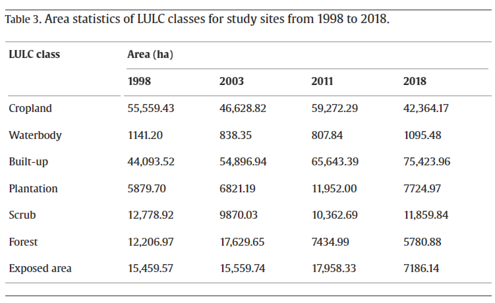
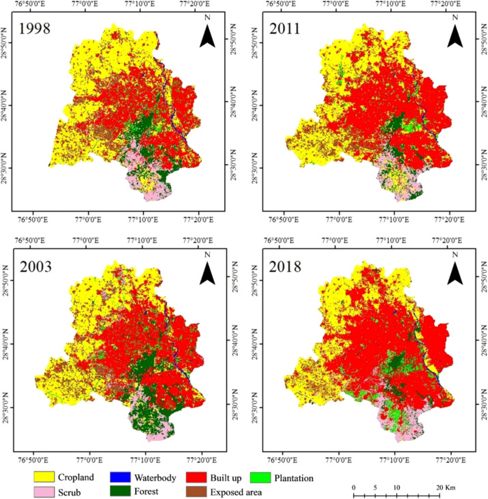
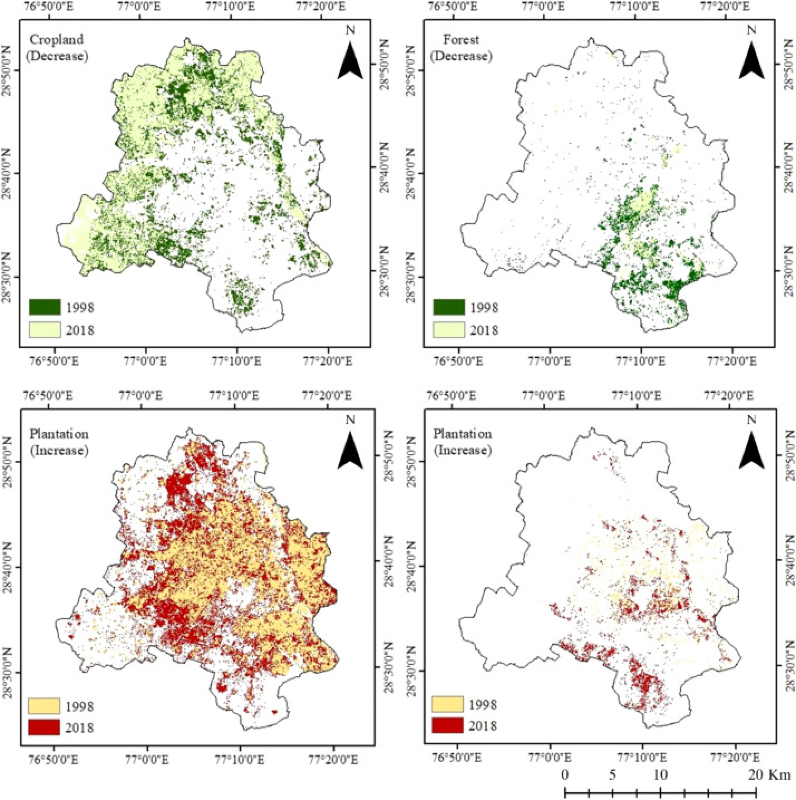

Results
4.1. Spatio-temporal LULC changes analysis
Two decades-long LULC change (LULCC) statistics and trends for Delhi are shown in Table 3. The net gain of urban area is related to the net loss in the area of almost every class with major loss of cropland followed by exposed area and forest respectively. Plantation class experienced net gain with huge variations in area coverage. The waterbody area faced some fluctuations among the reference years.

The increase in urban population requires infrastructural support
such as roads, houses, institutions, etc., which drive massive LULC
transformations. LULC maps for the years 1998, 2001, 2011, and 2018
show (Fig. 3, Fig. S2) that over the past two decades, the built-up
land use in Delhi has increased by 71% at an annual growth rate of
1566.52 ha. The rural area of the south-west and north-west part of
Delhi that encompassed with agricultural fields had undergone the
highest loss (13,195 ha) among all the classes during the process of
urban expansion. In the earlier years, central and eastern Delhi
were rich in planted sites. During the period of city growth, south
and south-western parts took the lead through increasing plantation
class by 10 ha. The scrub and forest classes are dominant in the
southern part of the city while the eastern Delhi, having the
highest population density, is with least forest cover. The sprawl
has particularly impacted the forest of southern Delhi through
fragmentation with an average annual loss of 322 ha. In addition,
built-up within the city has intensified with plantations and
exposed area being gradually transforming to built-up.

Changes in ES categories and impacts of LULC changes
Categorical percentage (%) contribution of each service category
type in the study period. Individual category (%) contribution shown
as numbers next to the bars.
